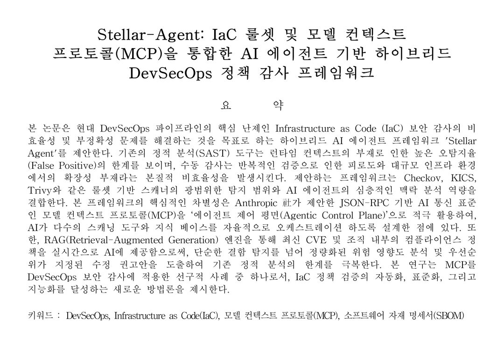

06.01 · Paper
Stellar-Agent: IaC 룰셋 및 모델 컨텍스트 프로토콜(MCP)을 통합한 AI 에이전트 기반 하이브리드 DevSecOps 정책 감사 프레임워크
정준영, 이창엽, 이정민, 이유식 · 2025 한국데이터사이언스학회 동계 종합학술대회
IaC 룰셋과 모델 컨텍스트 프로토콜(MCP)을 결합해 보안 정책 감사를 AI 에이전트가 수행하는 하이브리드 DevSecOps 프레임워크를 제안한 논문입니다.
- 논문집 논문번호 0032, p.118에 수록되었습니다.
- IaC 분석 파트와 논문 작성에 참여했습니다.
